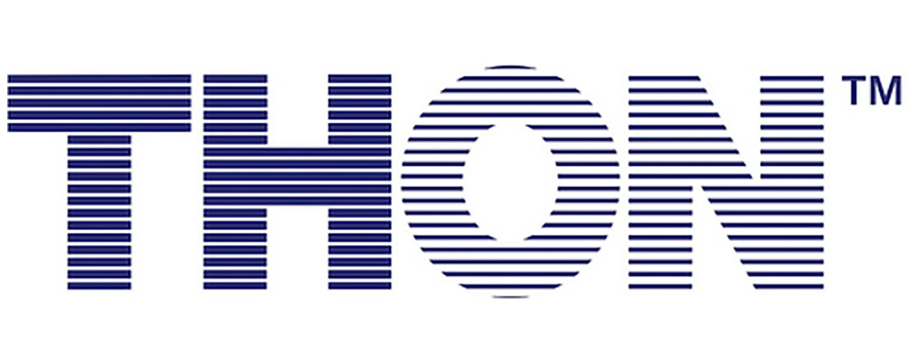

Selected work
Arbiter
A job-matching tool whose interface was generated with AI. During my internship at ConvoRecs, I interviewed the students it was built for and redesigned it around what they actually needed.

SupportMe
Crowdfunding rewards dramatic stories and big networks. Older adults tend to have neither. SupportMe is a concept for peer support that doesn't make them compete.

THON Family Portal
THON families open their portal with one question: what do we need to do next? The old portal buried the answer. My redesign leads with it.
Healthcare UX blog
I write about healthcare UX by taking apart real interfaces, starting with the ones patients are stuck using today.